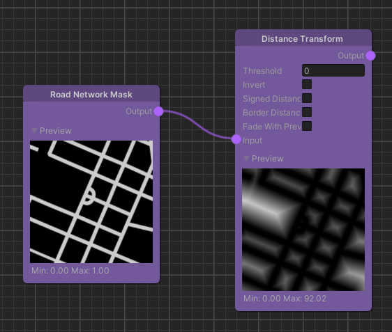
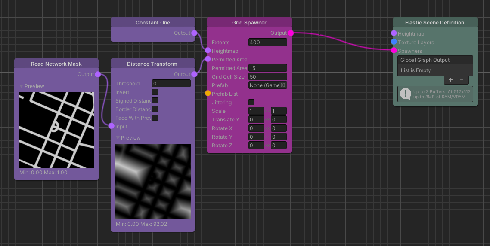

Distance Transform
Overview
The Distance Transform node generates a map where each value represents a distance.

Detailed Explanation
The value of each pixel is the distance measured between its position and the closest pixel over a threshold in the input image. That is, the two dimensional euclidean distance measured in meters.
Parameters
Inputs
| Name | Type | Description |
|---|---|---|
| Input | Map | Input map that is used together with the threshold for the mask to which the distance is calculated. |
Controls
| Name | Type | Description |
|---|---|---|
| Threshold | float | Values below or equal to this threshold are used for the mask. The values above this threshold are set to the closest distance to the masked area. |
| Invert | bool | Checking this box will only generate the distances for the pixels inside the masked area. |
| Signed Distance | bool | Generates negative distances when inside the masked area (or outside when inverted is selected). |
| Border Distance | bool | Additionally to the masked area use the distance to the borders when calculating the values. |
| Fade With Previous Input | bool | When generating new areas generate smoother transitions but with incorrect distance values. |
Use Cases
Distance transform for spawning

This example shows how the Distance Transform node can assist in spawning objects. Imagine having a prefab with a radius of 10 meters and we want to make sure it is not overlapping with the road to avoid collisions with the player.
We can achieve this, by first performing a distance transform with the road network as the input. Then, we plug the output of the Distance Transform into the Grid Spawners permitted area field. Using the permitted area threshold of 15, we make sure that our object is spawned at least 10 meters away from the road and leaves and add an additional 5 meters for potential localization inaccuracies.